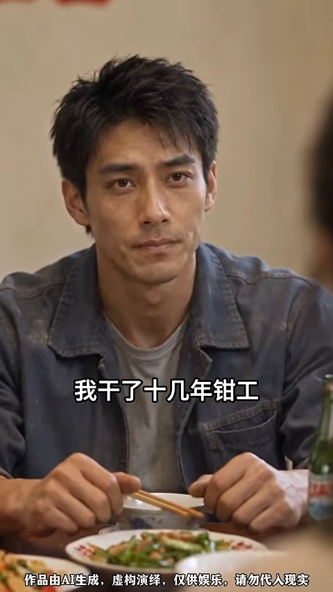
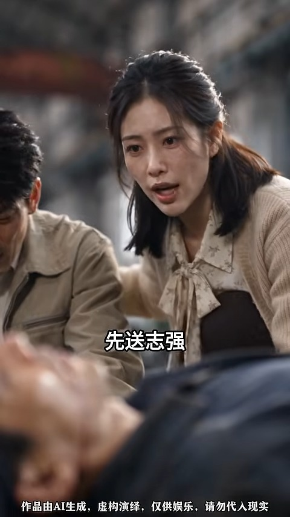
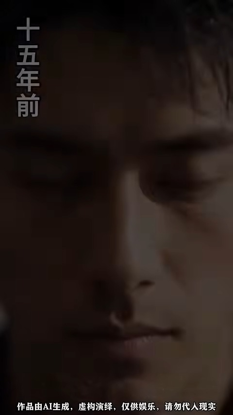
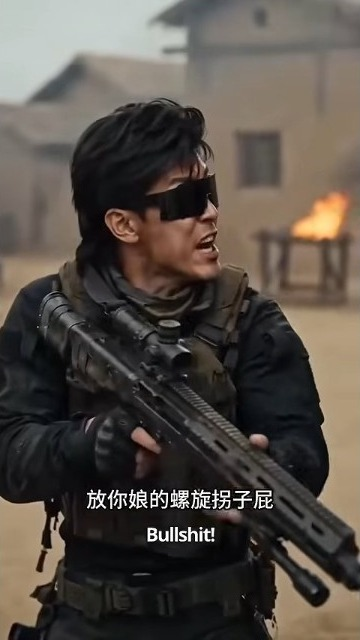

1~5화에서 주도권이 바뀐 순간은 AI 3편에서 모두 6번,같은 배신 서사의 실사작에서는 0번이었습니다.
반전의 종류별 횟수, 1~5화 관찰 결과
관계의 주도권을 되찾는다2회
기술로 실력을 증명한다2회
회귀로 다시 시작한다1회
힘으로 제압한다1회
실사 비교작0회
01
관계의 주도권을 되찾는다
一双手闯出一片天, 2화 첫 반격과 5화 파혼 선언
2:00 억압진급 추천을 양보하라는 요구가 되풀이된다
→

2:30 반전“선반공만 십수 년” 이번에는 양보를 거부한다
이어지는 반전
5화 마지막 대사 “这个婚到此为止”, 이 결혼은 여기까지. 파혼을 선언하며 관계를 스스로 정리합니다.
영상으로 보기
전생에서 양보만 하던 바로 그 자리에서 “이제야 내 차례야”라고 말합니다. 억압을 다시 보여 준 뒤 다른 선택을 하게 해, 짧은 시간에 보상 한 단위가 완성됩니다.
02
회귀로 다시 시작한다
一双手闯出一片天, 1화 끝, 红果 1:49
0:50 억압아내가 남편이 아닌 친구의 다리를 먼저 돌본다
→

1:10 억압“즈창 먼저 보내” 주인공은 뒤로 밀린다
→

1:30 반전“十五年前” 죽음 직후 15년 전으로 돌아간다
영상으로 보기
억압이 가장 커진 순간인 죽음에서 이야기 전체를 되돌립니다. 뒤에 오는 양보 거부, 파혼, 창업을 가능하게 하는 출발 장치입니다.
03
힘으로 제압한다
持械入宋, 5화 무렵 맹수 제압, 红果 누적 약 8분 30초
8:00 위기표범 습격, 화면에 “AI制作，无真实动物受伤” 표기
→
12:00 억압약탈자 기병이 마을을 습격한다
→

13:00 반전현대 화기로 반격한다
영상으로 보기
외부의 적을 시간여행으로 가져온 현대 무기로 압도합니다. 반전 장면이 곧 실사로 찍기 어려운 볼거리여서, 서사의 보상과 AI의 볼거리가 한 장면에서 겹칩니다.
0
실사 비교작: 반전 대신 억압이 쌓인다
小镇是非多之同床异梦, 1~5화 누적 약 11분 동안 반전 0회
같은 ‘아내의 배신과 성실한 남자의 재기’ 서사지만 5화까지 주도권이 한 번도 바뀌지 않습니다.
해석
AI 작품의 반전은 모두 주인공이 자기 능력, 곧 기술과 무기와 두 번째 기회로주도권을 되찾는 순간입니다. 다만 一双手의 반전은 복수보다 거부와 인정에 가깝습니다.
업계와 연구가 이미 확인한 공식 보기
인기 AI 만화극 90% 이상이 3단 구조. ‘压抑-开挂-打脸’, 억압과 치트키와 복수. 회귀와 타임슬립이 가장 흔한 출발 장치였습니다. 南方都市报, 2026.4.28
회당 약 500자, 끝마다 갈고리. 매 회가 다음 화로 넘기는 钩子를 남기고, 유료 결제 지점은 보통 10, 20, 30화입니다. 新榜/钛媒体, 2024.2
“10초마다 반전”. 따라 만든 작품이 쏟아져 사이다 내성이 오르고, 1.5배속과 2배속 시청이 일상이 됐다는 분석입니다. 扬子晚报, 2025.11
출처: 팀 관찰 기록, 红果 공식 플레이어, 2026.11.9 / 장면 시간은 YouTube 합본 기준, 출처 红果短剧 / 각 작품 / 영상: YouTube 一双手闯出一片天 합본, KK爱看 / YouTube 持械入宋 第一季 합본, Nano Review. 持械入宋 영상은 장면 캡처와 다른 업로드라 재생 시간이 캡처와 다릅니다.
6
분석 축 2 소재와 배경
소재와 배경
이 단계에서 보는 것기준작의 공장과 선반공이라는 소재가 다른 AI 작품에서도 반복되는지 봅니다.
같은 공식: 莞城往事
《一双手》와 《莞城往事》의 공통점
“배신당한 기술자가 자신의 능력으로 다시 일어선다”
다른 점은 회귀 대신 귀인, 곧 집주인이 전환 장치라는 것. 시간은 YouTube 합본 기준
순위표 전체에서 반복되는 소재
주력 소재현대 도시, 1980~90년대, 농촌
红果 AI真人剧榜 상위 20편은 중장년을 겨냥하고, 남성향은 ‘그 시대로 회귀해 가족을 부자로 만드는’ 이야기가 많습니다.